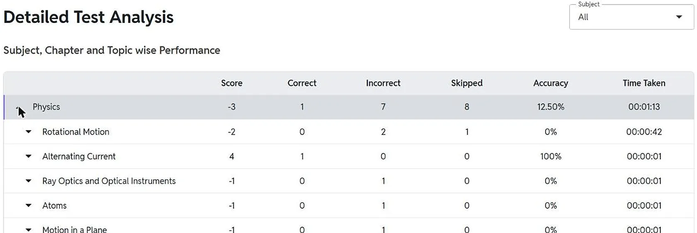
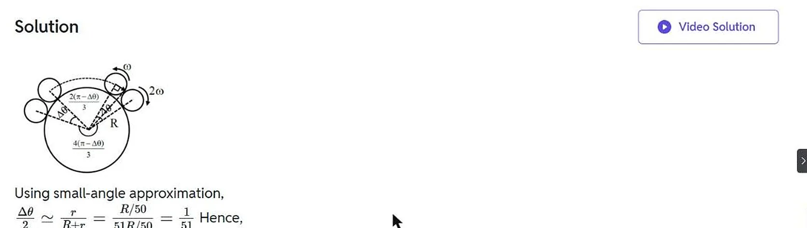
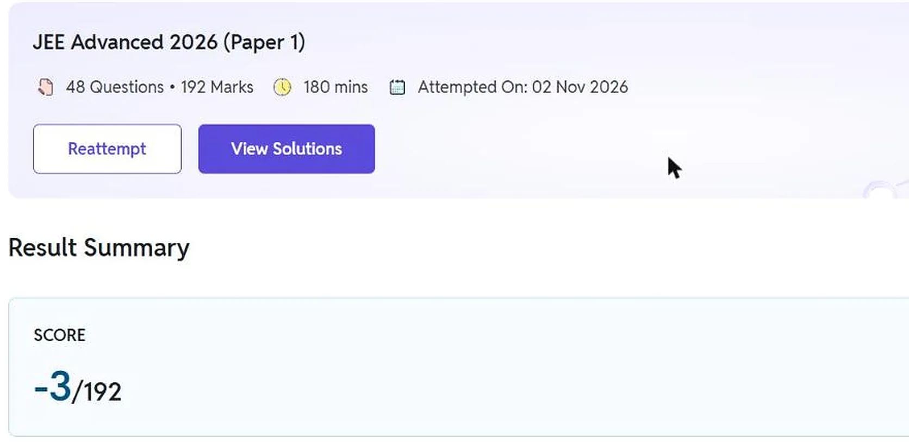

The test report shows where you lost marks. Never what to do on Monday.
I prepared for JEE myself, so mock tests were part of every week. As a product person, I wanted to see what PW tells a student after the score.
Students don't ask for what they've never seen, so the audit carries this case.
“It must have a section which displays the time per question… perfect, overtime and a confused category”4★ · Sep 2026
“in case of AI guru it can be more advanced to guide”5★ · Jul 2026


AI guesses why each mark was lost, the student confirms, and PW's own content becomes a 7-day plan.
